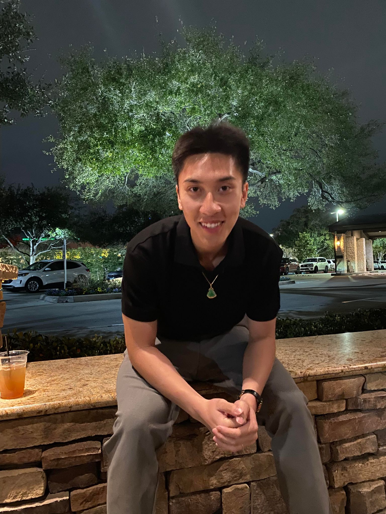

Henry Tiec
Before operating a university food hall, Henry had a diverse culinary journey. Henry gained expertise in flavor combinations and menu design through working in prestigious restaurants and studying hospitality management. These experiences inspired them to create a communal dining space. This vision became a reality with the establishment of a university food hall that fosters a sense of belonging within the campus community.
As the owner of a university food hall, Henry not only provide sustenance but also cultivate a sense of community. The food hall is a harmonious blend of my culinary expertise and the vibrant campus environment. It caters to diverse tastes and diets, becoming a culinary tapestry that reflects different cultures and culinary discoveries. Each aspect of the food hall, from the innovative menus to the ethically sourced ingredients, contributes to a welcoming atmosphere that enriches the campus experience. By embracing diverse flavors and culinary innovation, Henry strive to make the food hall an integral part of university life.
Besides running a university dining hall, Henry lives are enriched by numerous external pursuits. Passionate about community involvement, Henry engage in local events, food workshops, and charitable projects. These activities enhance their culinary knowledge and foster their dedication to community betterment. From partnering with farmers to participating in food festivals, Henry involvement in external activities extends their culinary passion and contributes to the community's well-being.